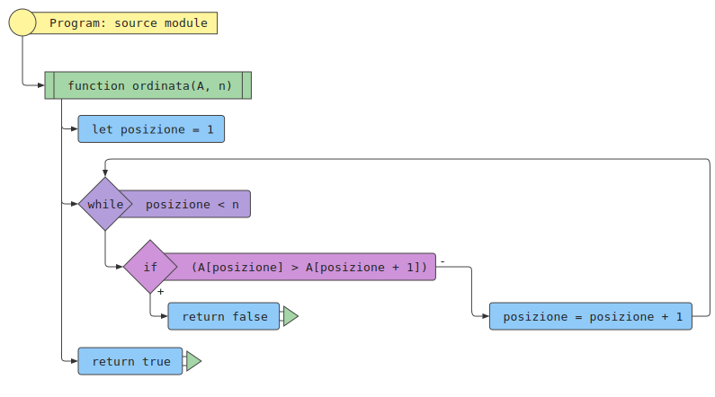

Determinare se una sequenza \( A \) di \( n \) valori è ordinata (secondo una relazione d’ordine).
Una sequenza \( A \) di \( n \) valori, \( A = [a_1, a_2, \ldots, a_n] \) (e un eventuale relazione d’ordine \( \preccurlyeq \)).
\(\mathrm{Vero}\) se \( a_i \preccurlyeq a_{i + 1} \text{ per } i = 1, 2, \ldots, n - 1 \), \(\mathrm{Falso}\) altrimenti.
La sequenza \(A = [1, 2, 3, 4, 5] \) di \( n = 5 \) (e la relazione d’ordine \( \leq \)).
\(\mathrm{Vero}\).
L’algoritmo di riconoscimento di una sequenza ordinata consiste nella scansione delle coppie di valori adiacenti della sequenza, partendo dalla prima coppia e terminando o restituendo falso quando si incontra la prima coppia non ordinata, o restituendo vero se tutte le coppie sono ordinate.

\( \mathrm{ordinata?}(A) = \begin{cases} \text{Vero} & \text{se } |A| < 2\\ \text{Falso} & \text{se } a_1 > a_2\\ \mathrm{ordinata?}(A \setminus a_1) & \text{altrimenti} \end{cases} \)
Numero confronti: 1
Numero confronti: \( n \)